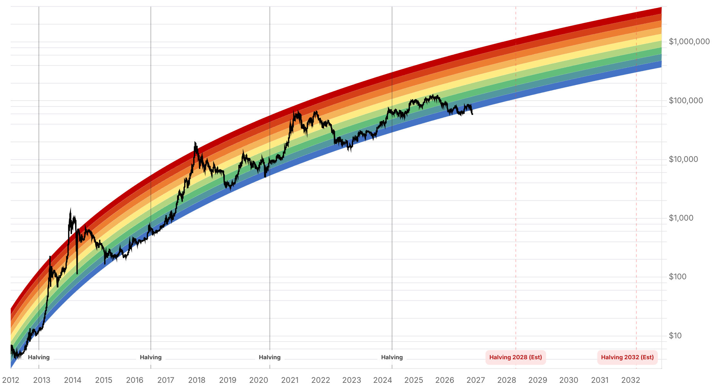

Reporte financiero
BTC cotiza en vivo a USD 60.414,96 (07:13 UTC), +0,06% frente al cierre previo de USD 60.378,57, consolidando la recuperación sobre USD 60.000 -la serie semanal (20 al 26 de noviembre) marca ahora +2,75%-. La novedad principal es que el tramo 24-25 de noviembre fue más volátil de lo que el reporte de ayer alcanzó a capturar: el 25-nov el precio llegó a perforar brevemente la zona de USD 55.000-57.500 intradía (nuevos mínimos desde septiembre de 2024, por debajo del piso de USD 58.798,98 del 20-nov) tras nuevas propuestas arancelarias de EE.UU. contra 14 socios comerciales, antes de rebotar con fuerza sobre USD 60.000 impulsado por liquidaciones de posiciones cortas apalancadas (~USD 90M en la primera hora del rebote, hasta USD 230M en cuatro horas según CoinGlass). En el frente de ETFs, Farside ya confirma de forma oficial la cifra del 24-nov que ayer solo circulaba como preliminar de SoSoValue: -USD 231,6M (IBIT -USD 175,3M), prácticamente idéntica a la citada ayer, llevando el acumulado de noviembre a -USD 4,9MM en 17 jornadas (15 negativas, 2 positivas, promedio diario -USD 290,5M, peor día el 20-nov con -USD 669,2M). Para el 25-nov, aún sin confirmar por Farside, prensa especializada (SoSoValue) reporta -USD 453,12M adicionales -combinado de dos días: -USD 684,68M-, con IBIT acumulando -USD 1.248M entre el 23 y 25 de noviembre pero con el ritmo diario moderándose de -USD 573M a -USD 174M. El Fear & Greed Index retrocedió hoy a 11, revirtiendo la mejora marginal de ayer (13) y volviendo al piso de la semana, en 'Extreme Fear'. Como contrapunto a la narrativa de rebote, surgen dos voces nuevas con lecturas opuestas: Doctor Profit ve la zona USD 52.000-62.000 como 'región de piso' y compra en toda esa banda, mientras Ali Martinez advierte que un cierre sostenido bajo USD 56.800 expondría soportes más débiles en USD 46.700 y 37.867 -sin cambios verificables hoy en Mark Yusko (su comentario más reciente sigue siendo del 18 de noviembre), Christopher Waller, la exclusión de Strategy de los índices MSCI (sigue efectiva al cierre del 30 de noviembre), la Clarity Act, la apelación del Reino Unido sobre los 61.000 BTC, BTCPay Server, Cantor Fitzgerald ni el reclamo sobre Irán.
El reporte de ayer cerraba con BTC en USD 59.230,77 marcando un mínimo de la ventana semanal. Lo que no se alcanzó a capturar es que, horas después, el precio profundizó mucho más: cobertura de prensa (Crypto Briefing, crypto.news) ubica el piso intradía del 25-nov entre USD 55.130 y USD 57.240 según la fuente -el nivel más bajo desde septiembre de 2024-, gatillado por nuevas propuestas arancelarias de EE.UU. contra 14 socios comerciales. La reversión fue igual de abrupta: liquidaciones de posiciones cortas apalancadas (~USD 68-90M en la primera hora, hasta USD 230M en cuatro horas según CoinGlass) impulsaron un rebote de más de 9% desde el mínimo, devolviendo el precio sobre USD 60.000 para hoy 26-nov (USD 60.414,96 en vivo, +0,06% vs. cierre previo). La serie de cierres diarios de Yahoo Finance (20 al 26 de noviembre) muestra ahora una ganancia semanal de +2,75%, con el máximo de la ventana en USD 61.210,98 (23-nov) y el mínimo en USD 58.798,98 (20-nov).
El reporte de ayer citó -USD 231,56M del 24-nov como cifra preliminar de SoSoValue, pendiente de confirmación de Farside. Hoy Farside/tftc.io ya publica ese dato como oficial: -USD 231,6M en salidas netas totales, con IBIT aportando -USD 175,3M -prácticamente idéntico a lo reportado ayer-, llevando el acumulado oficial de noviembre a -USD 4,9MM en 17 jornadas (15 negativas, 2 positivas), con promedio diario de -USD 290,5M y el 20-nov como peor día individual (-USD 669,2M). Para el 25-nov, Farside todavía no publica cifra, pero SoSoValue (vía crypto.news) reporta -USD 453,12M adicionales, lo que sumado al 24-nov confirmado da un combinado de dos días de -USD 684,68M. IBIT de BlackRock acumula -USD 1.248M entre el 23 y el 25 de noviembre, aunque el ritmo diario se modera de -USD 573M (23-nov) a -USD 174M (25-nov) -la primera señal de desaceleración en varios días-. Los activos netos totales de los ETFs de BTC caen a USD 72.030M, con entradas netas acumuladas de USD 51.590M desde el lanzamiento.
El RSI diario se ubica en 29,14 -justo bajo el umbral de sobreventa de 30-, y el histograma MACD en -62,94 muestra momentum bajista perdiendo fuerza, aunque sin un cruce alcista confirmado todavía; el gráfico sigue marcando máximos y mínimos descendentes, sin reversión de tendencia confirmada. En el plano on-chain, el analista de CryptoQuant Amr Taha señala señales mixtas: los depósitos de tamaño medio a Coinbase Prime promedian 10.400 BTC en 7 días -el nivel más alto desde noviembre de 2025-, y los depósitos a Binance subieron 183% (de 728 a 2.060 BTC) -movimientos que, históricamente, pueden anteceder presión vendedora, aunque no son concluyentes por sí solos. Las liquidaciones totales en 24 horas se reportan de forma distinta según la fuente: crypto.news (vía CoinGlass) cuenta ~144.000 traders liquidados por USD 692M (BTC: USD 264M, de los cuales USD 143M en cortos y USD 120M en largos), mientras Crypto Briefing cita un rango de USD 1.800-2.400M -se deja constancia de la discrepancia entre fuentes en vez de promediar una cifra.
El índice de alternative.me vuelve hoy a 11, después de la mejora marginal a 13 reportada ayer -que ya se señaló como insuficiente para hablar de cambio de sentimiento-. El retroceso confirma esa lectura: el mercado permanece anclado en 'Extreme Fear' sin una mejora sostenida, coincidiendo con la ventana más volátil de la semana (el mínimo intradía del 25-nov y el rebote posterior).
Dos analistas no citados en ediciones anteriores entregan hoy lecturas contrapuestas sobre la zona actual de precio. Doctor Profit define USD 52.000-62.000 como su 'región de piso' y compra en toda esa banda, rechazando explícitamente los llamados a USD 30.000 o 40.000 que circulan en redes. Ali Martinez (@alicharts, trader independiente y fundador de la comunidad AliCharts) marca un nivel de costo base cercano a USD 59.324 (con base en ~400.000 BTC transados) y advierte que un cierre sostenido bajo USD 56.800 dejaría expuestos soportes más débiles en USD 46.700 y USD 37.867. Se presentan ambas posturas sin promediarlas, siguiendo el criterio de este reporte ante opiniones contradictorias. Sin novedad verificable hoy de Mark Yusko (su comentario más reciente sigue siendo del 18-nov, 'bad liquidation cycle' con USD 58.000 como nivel clave) ni de Christopher Waller sobre la reunión de la Fed de diciembre.
La exclusión de Strategy (MSTR) de los índices MSCI sigue efectiva al cierre del 30 de noviembre, sin cambios desde el anuncio original del 11-nov. No se encontró avance legislativo de la Clarity Act desde la versión combinada del Senado de julio de 2026, ni novedad en la apelación de los afectados sobre los 61.000 BTC retenidos por el Reino Unido desde la cobertura de julio de 2026. Tampoco hay noticia nueva específica de noviembre sobre BTCPay Server o la posición de Cantor Fitzgerald en Strategy (su 13F más reciente, del 16-nov, ya fue cubierto), ni sobre el reclamo no verificado vinculado a Irán -se señala brevemente para dejar constancia de que se revisó, no porque haya novedad.
| Periodo | Valor |
|---|---|
| 20 nov | 58798.98 |
| 21 nov | 60094.09 |
| 22 nov | 61161.91 |
| 23 nov | 61210.98 |
| 24 nov | 59747.77 |
| 25 nov | 59747.77 |
| 26 nov (en vivo) | 60414.96 |
| Periodo | Valor |
|---|---|
| Hoy | 11 |

“52k to 62k is my bottom region, and any volatility inside that range is a buy for me.”
“A sustained close below $56,800 could expose thinner support at $46,700 and $37,867.”
El rebote de hoy sobre USD 60.000 -impulsado por liquidaciones de cortos, no por demanda nueva según los análisis citados- revierte el mínimo intradía más profundo de la semana (25-nov, USD 55.000-57.500 según fuente). El RSI cerca de sobreventa (29,14) y el MACD perdiendo fuerza bajista sugieren que la presión vendedora se modera, pero sin confirmación de reversión de tendencia. El Fear & Greed Index volvió a 11, mostrando que el sentimiento no acompaña todavía la recuperación de precio.
El ritmo de salidas de ETFs muestra la primera señal de desaceleración en varios días (IBIT de -USD 573M a -USD 174M diarios entre el 23 y 25-nov), aunque el acumulado de noviembre ya supera los USD 4,9MM confirmados por Farside (17 jornadas) y podría acercarse a USD 5.600M si se confirma el dato preliminar del 25-nov. Señales on-chain mixtas (depósitos a exchanges al alza según CryptoQuant) añaden cautela sobre si la desaceleración de salidas es sostenible.
Sin cambios en los objetivos de precio de largo plazo ya reportados en ediciones anteriores (Citigroup, Bernstein, Standard Chartered, Tom Lee, NYDIG, Armstrong, piso de costo de producción de JPMorgan en USD 94.000). Las dos lecturas nuevas de esta edición -Doctor Profit viendo USD 52.000-62.000 como zona de piso definitiva, Ali Martinez advirtiendo soportes más débiles en USD 46.700/37.867 si se pierde USD 56.800- amplían el rango de escenarios de mediano-largo plazo que vale la pena monitorear.
Múltiples fuentes coinciden en que el salto sobre USD 60.000 fue impulsado por el cierre forzado de posiciones cortas apalancadas, no por nueva demanda institucional -de hecho, las salidas de ETFs continúan, aunque a menor ritmo-. Conviene esperar confirmación con volumen spot genuino antes de leer esto como un piso.
Ali Martinez señala que un cierre sostenido bajo ese nivel abriría la puerta a soportes mucho más débiles (USD 46.700 y 37.867). Es el nivel más concreto y verificable entre las lecturas técnicas nuevas de hoy para gestionar riesgo de cola.
La cifra de -USD 453,12M para el 25-nov proviene de SoSoValue, no de Farside (la fuente de referencia de este reporte), y Farside aún no publica ese día al momento de esta edición -el patrón de confirmación con ~1 día de rezago ya se repitió con el dato del 24-nov-.